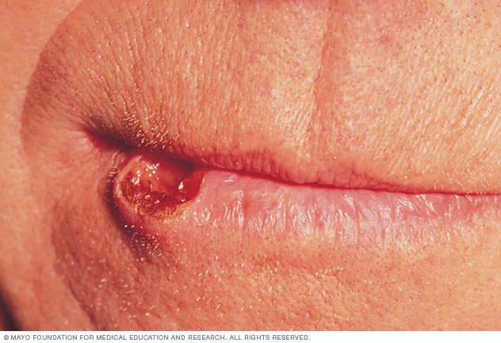
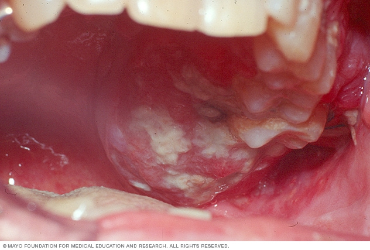
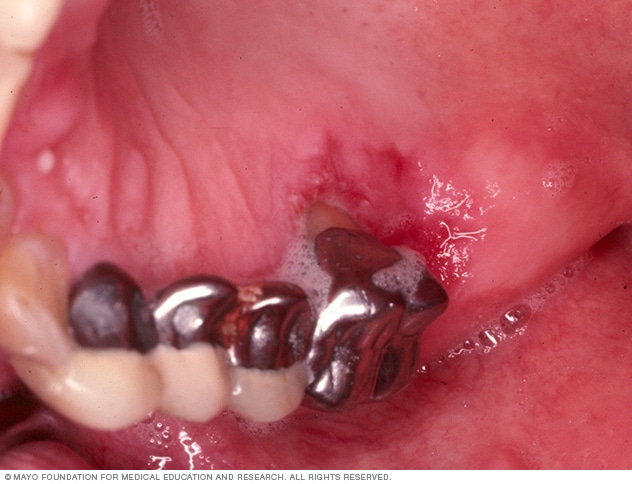

Cancer
El cáncer de boca puede presentarse como una llaga de labio que no cicatriza.
Los signos de cáncer de boca pueden incluir sangrado, hinchazón, parches blancos o enrojecimiento en la boca.
Los signos de cáncer en la boca pueden incluir llagas rojas que no cicatrizan.
Se denomina cáncer de boca al cáncer que se desarrolla en cualquiera de las partes que componen la boca (cavidad bucal).
El cáncer de boca puede afectar las siguientes partes:
Labios
Encías
Lengua
Revestimiento interno de las mejillas
Paladar
Base de la boca (debajo de la lengua)
El cáncer que afecta el interior de la boca, a veces, se denomina cáncer oral o cáncer de la cavidad oral.
El cáncer de boca es uno de los tantos tipos de cáncer que corresponden a la categoría llamada «cánceres de cabeza y cuello». El cáncer de boca y los otros tipos de cáncer de cabeza y cuello se suelen tratar de manera similar.Se denomina cáncer de boca al cáncer que se desarrolla en cualquiera de las partes que componen la boca (cavidad bucal). El cáncer de boca puede afectar las siguientes partes:
Síntomas
Los signos y síntomas del cáncer de boca se pueden incluir los siguientes:
*Una llaga en los labios o la boca que no cicatriza
*Un parche blanco o rojizo en la parte interna de la boca
*Dientes flojos
*Un crecimiento o protuberancia dentro de la boca
*Dolor bucal
*Dolor de oído
*Dificultad o dolor al tragar
Cuándo consultar al médico
Pide una consulta con tu médico o dentista si tienes signos y síntomas persistentes que te preocupen y que duren más de dos semanas. Es posible que tu médico investigue, en primera instancia, otras causas más frecuentes de tus signos y síntomas, como una infección.
Causas
Los cánceres de boca ocurren cuando las células de los labios o la boca desarrollan cambios (mutaciones) en su ADN. El ADN de una célula contiene instrucciones que le indican a la célula qué funciones debe realizar. Los cambios de las mutaciones les indican a las células que continúen creciendo y dividiéndose cuando las células sanas morirían. La acumulación anormal de células cancerosas en la boca puede formar un tumor. Con el tiempo, las células cancerosas se pueden diseminar dentro de la boca y hacia otras zonas de la cabeza y el cuello, o bien a otras zonas del cuerpo.
El cáncer de boca normalmente comienza en las células planas y delgadas (células escamosas) que recubren los labios y la parte interior de la boca. La mayoría de los cánceres de boca son del tipo denominado carcinoma de células escamosas.
No se sabe con exactitud qué causa las mutaciones en las células escamosas que provocan el cáncer de boca. Sin embargo, los médicos han identificado algunos factores que podrían aumentar el riesgo de cáncer de boca.
Factores de riesgo
Los factores que pueden aumentar el riesgo de cáncer de boca incluyen los siguientes:
*El consumo de cualquier tipo de tabaco, incluidos cigarrillos, cigarros, pipas, tabaco de mascar y rapé, entre otros.
*El consumo excesivo de bebidas alcohólicas.
*La exposición excesiva al sol en los labios.
*Un virus de transmisión sexual llamado virus del papiloma humano (VPH).
*Un sistema inmunitario debilitado.
Prevención
No hay ninguna manera comprobada de prevenir el cáncer de boca.
Sin embargo, puedes seguir estos consejos para reducir el riesgo de cáncer de boca:
*Deja de consumir tabaco o no comiences a hacerlo. Si consumes tabaco, deja de hacerlo. Si no usas tabaco, no empieces. Consumir tabaco, ya sea que lo fumes o lo mastiques, expone a las células de la boca a peligrosas sustancias químicas cancerígenas.
*Si bebes alcohol, que sea con moderación. El consumo excesivo y frecuente de alcohol puede irritar las células de la boca y hacerlas vulnerables al cáncer de boca. Si bebes alcohol, hazlo con moderación. Para los adultos sanos, esto significa hasta una copa por día para las mujeres de todas las edades y para los hombres mayores de 65 años, y hasta dos copas por día para los hombres menores de 65 años.
*Evita la exposición excesiva al sol en los labios. Mantente a la sombra siempre que sea posible para proteger la piel de los labios contra el sol. Usa un sombrero con ala ancha que te proteja bien todo el rostro, incluida la boca. Incorpora el uso de un protector solar para los labios como parte de la rutina de tu régimen de protección solar.
*Consultar a tu odontólogo regularmente. Como parte del examen dental de rutina, pídele a tu dentista que te examine toda la boca para detectar cualquiera anomalía que pueda indicar cambios precancerígenos y cancerígenos en la boca.